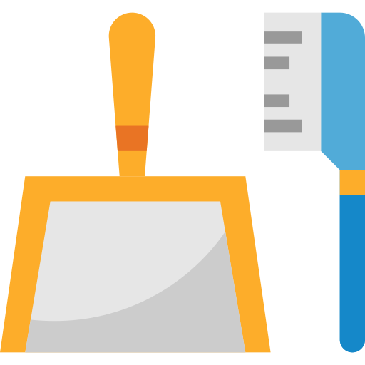
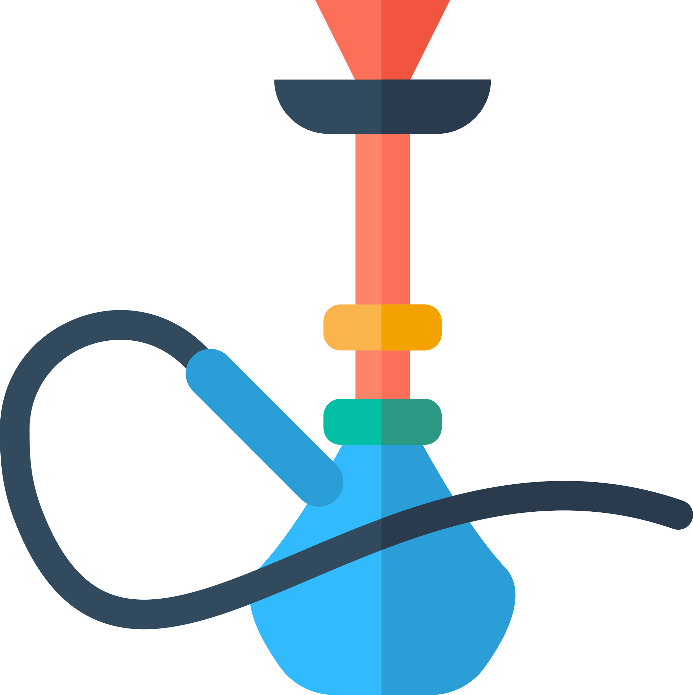
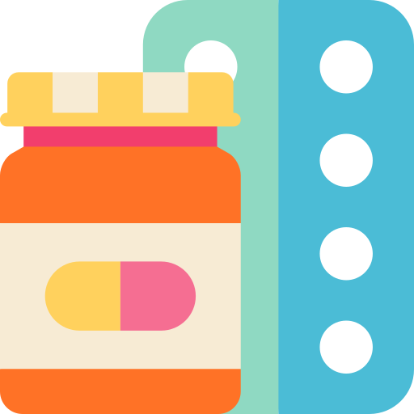
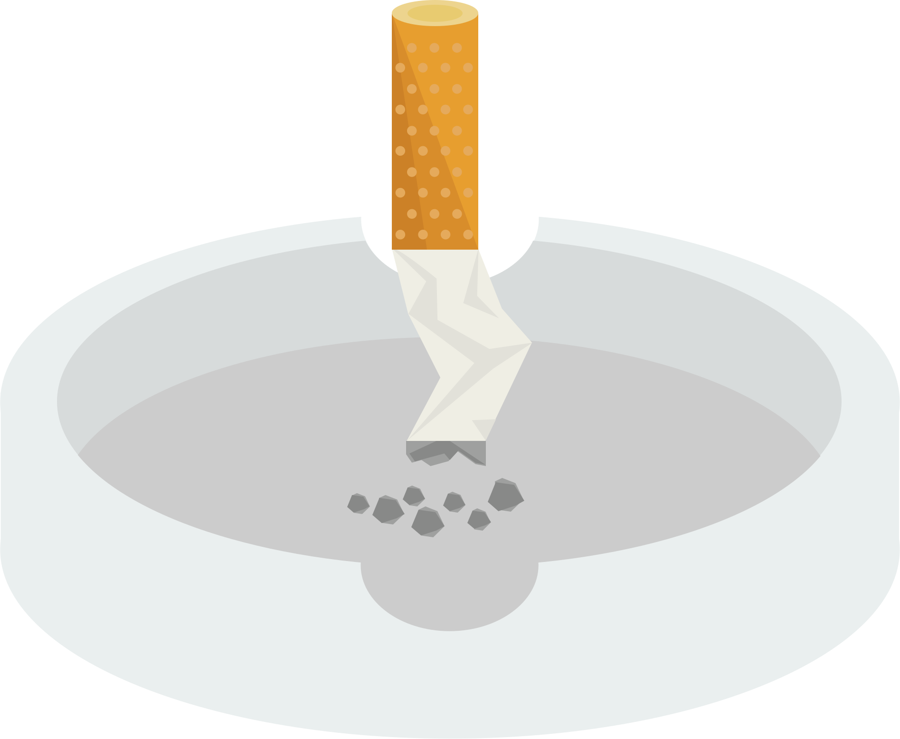

الإقلاع عن التدخين
الإقلاع عن التدخين جزء من طرق التحكم بمرض السكري و تغيير نمط الحياة.
يوجد العديد من البرامج (مثل خطوط المساعدة الهاتفية لتقديم الاستشارات) والأدوات (مثل: العلكات واللصقات) المتاحة للمساعدة في جهود الإقلاع عن التدخين.
من أين أبدأ...؟
-

حدد تاريخًا للإقلاع عن التدخين.
-
أخبر أصدقائك وأفراد عائلتك أنك تخطط للإقلاع عن التدخين
-

غيَّر بيئتك
تخلص من جميع السجائر، والولاعات، ومنافض السجائر في العمل، أو المنزل، أو في سيارتك
-
اذكر الأسباب التي تدفعك إلى الإقلاع عن التدخين
ذكر نفسك بتلك الأسباب كل يوم
-

حدد محفزات التدخين
ضع خطة للتعامل معها.
-

ابحث عن طرق للتعامل مع أعراض انسحاب النيكوتين
أدوية، وبدائل النيكوتين، وقد يساعد تعديل السلوك في ذلك.
-
اطلب علاج الإقلاع عن التدخين والإحالة إلى عيادة التدخين.
-

إذا أخفقت في متابعة الإقلاع عن التدخين، حدد تاريخًا جديدًا للإقلاع وحاول مرة أخرى.
يحتاج بعض الناس إلى عدة محاولات قبل الإقلاع عن التدخين.